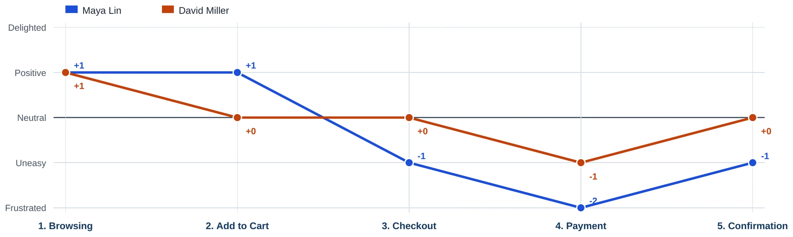
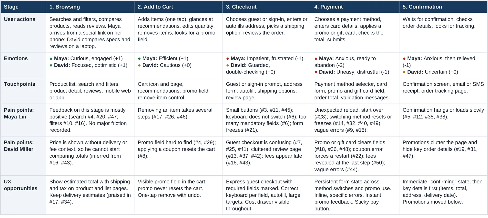
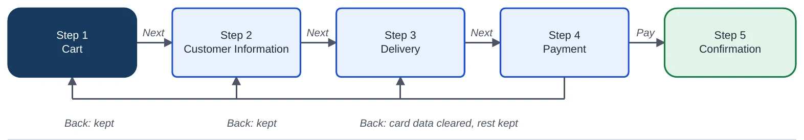
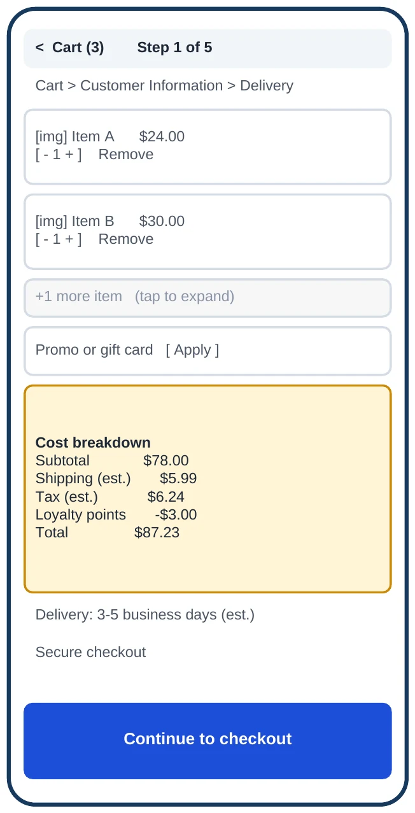
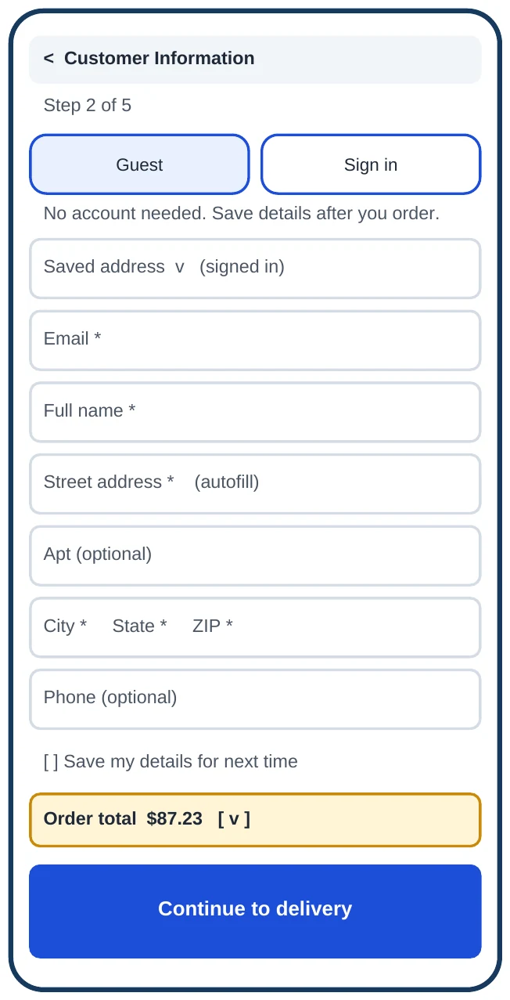
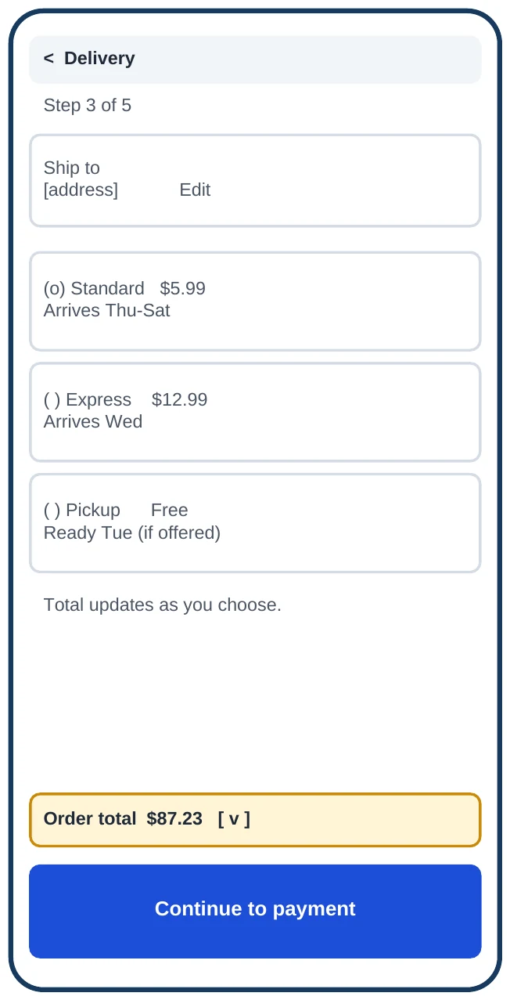
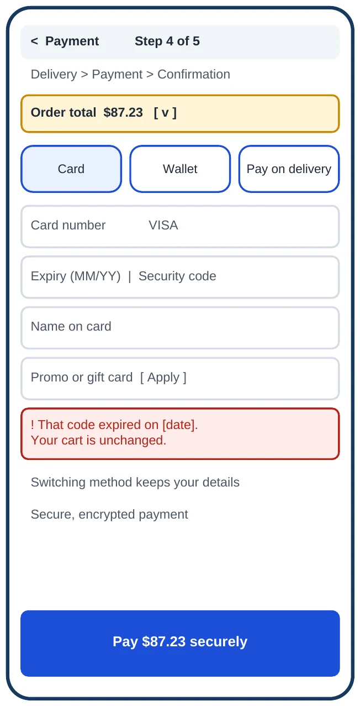
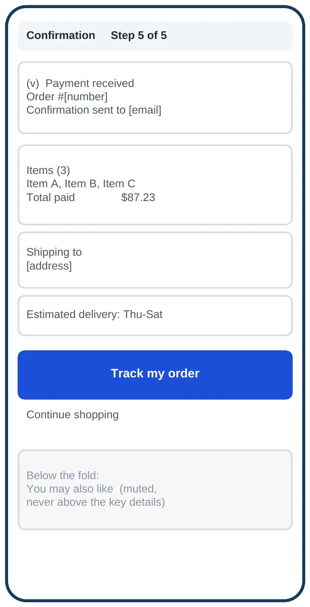
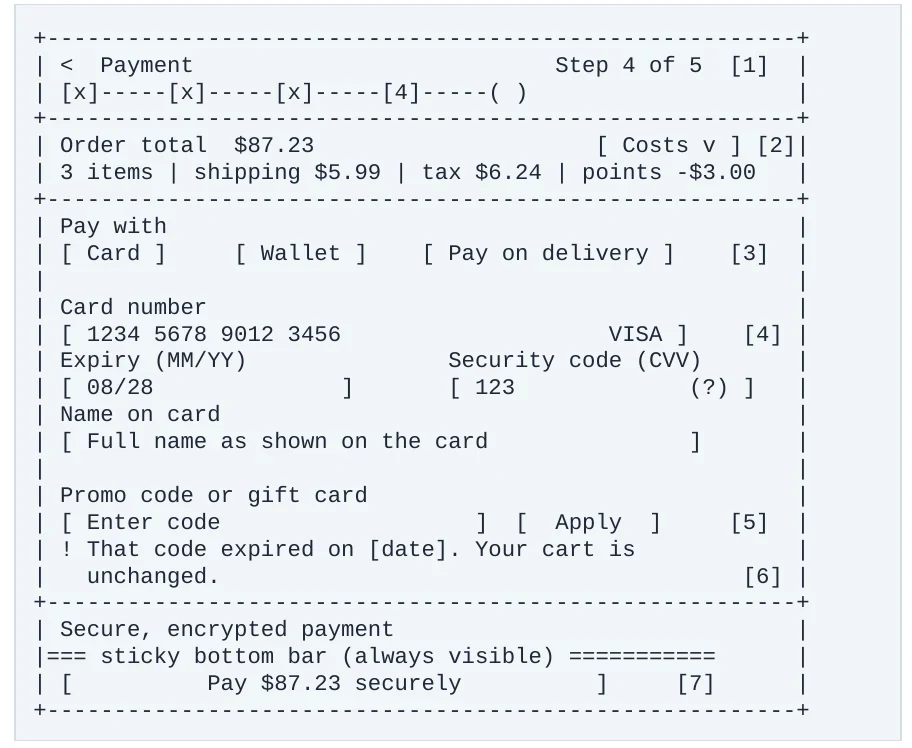

Turning 50 customer complaints into a five-step checkout that shows every cost early, never loses a customer's work, and recovers gracefully when a payment fails.
The research data was supplied by the course, not collected by me. There were no interviews and no usability tests, and the screens are low-fidelity wireframes and a specification, not shipped UI. The decisions below are what I contributed.
50 anonymized customer feedback quotes and 30 user stories for a fictional e-commerce checkout.
Ranking the pain points, building two personas, mapping the journey, choosing and prioritizing features, designing the flow, refining the Payment screen, and scripting recovery conversations.
Five patterns account for 39 of the 50 comments. The other 11 are about guest checkout clarity, cart clutter and hard-to-find promo options. The most common problem is the one users cannot see coming: losing their work.
“When I applied a coupon code, my entire cart reset, which was frustrating.”
Customer feedback #8
Each category carries a severity rating (High to Medium) alongside its raw count, so the ranking can be challenged. Form instability, hidden fees and mobile friction rate High because they hit users at the point of payment; errors and confirmation rate lower.
Both are synthetic composites. Every goal and frustration cites the feedback numbers it came from, and their quotes are labeled as illustrative.
Social Media Coordinator who checks out on her phone in short windows. Preferred devices: smartphone first. Preferred features: autofill, express checkout, large targets, a sticky pay button. She leaves when: a form reloads or freezes.
Financial Analyst who compares totals and treats promo codes as part of the price. Preferred devices: laptop to buy, phone to track. Preferred features: early cost breakdown, visible promo field, loyalty points. He loses trust when: a number changes at the last step.
Five stages, scored from -2 to +2. The scores are my qualitative judgments from the feedback, not measured data. Maya cannot recover from a reload; David keeps going but trusts the store less.


A prettier fee badge on the last screen does not stop sticker shock. Shipping and tax estimates have to exist earlier in the flow, and form state has to survive every secondary action.
A persistent summary on the cart, customer information, delivery and payment steps. Shipping and tax read “estimated” until the address is entered, then exact. The total only changes when the user changes something.
One checkout state store survives promo codes, payment-method switches, back-navigation and reload. Card number and security code are never stored; promo actions update the total only.
Priority: persistent state, the cost drawer and the mobile ergonomics system are P0. Errors and confirmation are P1. The conversational assistant is P2, because it depends on the P0 work existing first.
Cart, Customer Information, Delivery, Payment, Confirmation. I split Delivery out so no step carries a combined label like “Details & Shipping”, and so shipping choices sit beside dates and prices.






Payment is the highest-friction step, so I specified it in detail: 52px targets, 16px margins, a sticky pay button and persistent labels. Each change is tied to a recognized framework, not a taste call.

Legacy copy tells people something failed. Improved copy says what happened, that their data is safe, and what to do next. The “before” lines are typical legacy patterns, not quotes from the data.
When a card is declined, a promo fails or someone asks where their order is, the assistant answers from the payment gateway, the promo engine and the order system only. It does not invent policies or delivery dates, offers one-tap chips instead of typing, and hands off to a person when it cannot answer.
Explains the decline without blame, confirms the cart and details are saved, and offers another card, a wallet or help.
Says whether the code is expired or ineligible, confirms the cart is unchanged, and offers current offers.
Reports carrier, last scan and expected dates. If tracking is unavailable it says so and offers support.
Fixing a checkout is mostly about information timing and state, not screens. The biggest wins came from deciding when a number appears and what survives a tap, which only shows up when you treat the interface as a system.
Test the five-step flow and the “confirming” state with real users, confirm the state-store hypothesis with engineering, and measure whether the early cost drawer reduces drop-off. None of that has been validated yet.